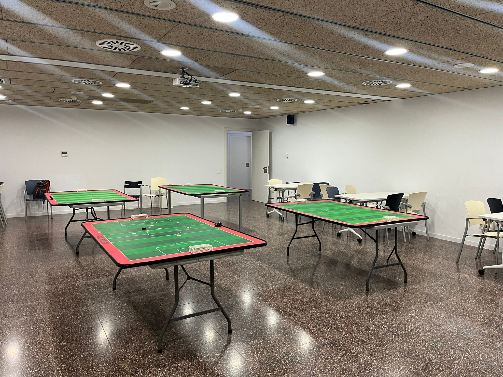

Descobreix l'esport
Què és el
Futbol Botons?
Un joc de taula que simula el futbol amb botons com a jugadors. Senzill d'aprendre, difícil de dominar — i molt divertit de compartir.
Estratègia
Cada jugada requereix visió tàctica. Planifica, anticipa i supera el rival amb intel·ligència sobre la taula.
Habilitat
La precisió és clau. Controla la força i la direcció dels teus botons per construir jugades i marcar gols.
Comunitat
Més que un esport, és un punt de trobada. Comparteix coneixement, experiències i bons moments entre aficionats.
Vols aprofundir en l'esport? Troba el reglament, competicions i molt més a futbolbotons.cat.
El nostre club
Nascuts de la
unió
El Club Futbol Botons Baix Llobregat és el resultat de la fusió de les associacions de Futbol Botons d'Esplugues i Sant Joan Despí. Neix amb la voluntat d'unir esforços i impulsar aquest esport al territori.
El nostre objectiu és promoure el Futbol Botons i ser una escola de jugadors, formant nous aficionats a tot el Baix Llobregat — especialment a Esplugues. Volem apropar l'esport a joves i adults, combinant competició, formació i convivència.
El club és un punt de trobada per a jugadors experimentats i per a qui vulgui descobrir aquest esport per primera vegada.

Uneix-te
Vine a jugar
amb nosaltres
Entrenaments setmanals
Cada divendres de 18:00 a 20:00h al Poliesportiu Les Moreres d'Esplugues.
Competicions i lligues
Participem en lligues, tornejos i trobades a Catalunya i a la resta del territori.
Jornades obertes
Organitzem partides d'iniciació i demostracions perquè qualsevol pugui provar-ho.
Formació
T'ensenyem les bases del joc. Tant si tens experiència com si és el teu primer dia.

On juguem